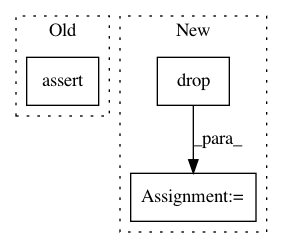

f3ed367fe1e586c73ac5fe39fef7b916d5987f2b,src/pudl/output/eia860.py,,generators_eia860,#Any#Any#Any#,209
Before Change
pd.to_datetime("{}-12-31".format(
max(pc.working_years["eia860"])))
if end_date > eia860_end_date + pd.DateOffset(years=1):
raise AssertionError(f
EIA 860 end_date ({end_date}) is more than a year after the
most recent EIA 860 data available ({eia860_end_date}).
That"s too much forward filling.)
gens_eia860_select = gens_eia860_select.where(
gens_eia860_tbl.c.report_date <= end_date
)
After Change
out_df.report_date = pd.to_datetime(out_df.report_date)
// Bring in some generic plant & utility information:
pu_eia = (
plants_utils_eia860(
pudl_engine, start_date=start_date, end_date=end_date)
.drop(["plant_name_eia", "utility_id_eia"], axis="columns")
)
out_df = pd.merge(out_df, pu_eia,
on=["report_date", "plant_id_eia"],
how="left")
// ,"plant_name_eia", "utility_id_eia"])
// Drop a few extraneous fields...
out_df = out_df.drop(["id"], axis="columns")
In pattern: SUPERPATTERN
Frequency: 3
Non-data size: 3
Instances
Project Name: catalyst-cooperative/pudl
Commit Name: f3ed367fe1e586c73ac5fe39fef7b916d5987f2b
Time: 2020-02-12
Author: zane.selvans@catalyst.coop
File Name: src/pudl/output/eia860.py
Class Name:
Method Name: generators_eia860
Project Name: nilearn/nilearn
Commit Name: e372946bfc91419bc1dbbfadebfed6e6a402956d
Time: 2021-02-05
Author: nicolas.gensollen@gmail.com
File Name: nilearn/glm/tests/test_paradigm.py
Class Name:
Method Name: test_check_events
Project Name: EpistasisLab/tpot
Commit Name: 1d3771e0c0c42214e5328a881f67772d764b4e2f
Time: 2016-07-07
Author: supacoofoo@gmail.com
File Name: tests.py
Class Name:
Method Name: test_classifiers